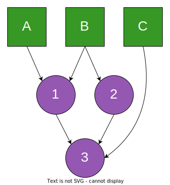

Dataflows.jl
This package provides a framework to run computations in a tolological order of the dependency graph. It aims to be fast and allocation free, for low-latency applications.
What does it do?
Let's give an example.

Here, A, B, and C represent some inputs/sources to the graph. Meaning they contain some data. The nodes 1, 2 and 3 correspond to derived data sets:
1depends onAandB,2depends onB,3depends on1,2andC.
This only mean that when A is updated, the nodes 1 and 3 must be updated, and in this order. When B is updated, nodes 1, 2 and 3 must be updated, either in (1, 2, 3) or (2, 1, 3) orders. Those 2 orders are called topological, for the DAG displayed above.
Getting Started
To build a graph, one needs to start with some inputs, which are roots of the graph. We can create inputs by providing any type, or by providing an object that will be mutated.
input_1 = input(Int64)
input_2 = input(Ref(0))!!! Note "Inputs are never considered initialized" For now, when creating an input from an object, the initial value will not be considered initialized before changing its value, or updating it.
Then, derived nodes can be build with map
node_1 = map(input_1) do x
println("node 1: $(2x)")
2x
end
node_2 = map(node_1, input_1, input_2) do x, y, z
println("node 2: $(x + y + z[])")
x + y + z[]
endTo ensure type stability, and performance, the types of the nodes are resolved at this stage. Hence the methods used in map must already be defined at this stage. We can verify that node_2 defined above contains a value of type Int.
julia> eltype(node_2)
Int64To use this graph, we need to push values into the two inputs. We can either push a new value, or a function that mutates the current value. To do so, we need to wrap our inputs into a Source, and push to the sources, and not the inputs directly.
s1 = Source(input_1) # Captures the current state of the graph. Nodes must not be added afterwards.
s2 = Source(input_2) # Captures the current state of the graph. Nodes must not be added afterwards.
s1[] = 1 # prints "node 1: 2". The second node cannot be evaluated since the data is missing
s2[] = (x -> x[] = 2)# prints "node 2: 5"
s1[] = 3 # prints "node 1: 6" "node 2: 11".Introducing this wrapping may seem a bit cumbersome to the user. But it is used to achieve high performance. When creating a source, the current state of the graph is being captured in the parameters of the Source type. This allows to dispatch the subsequent calls to push! on performant generated methods. This capture of the the graph implies that we first need to build the complete graph before wrapping the inputs into sources. Otherwise, the nodes added subsequently will be ignored.
As explained, in the introduction, each time an input is updated, the data will flow down the graph, updating all children nodes.
We can notice how updating the first input only updates node_2 once. This differs with simple reactive programming implementations, where the graph is generally traversed in a depth-first manner, with repetitions (typycally if the graph is not a tree). Here the graph is traversed in the topologic order of the construction.
Controlling the flow of the graph
This package provides a way to avoid direct filter and indirect select triggering of children.
Filtering
Consider the following case:
input_1 = input(Float64)
n = map(x->println("new update: $x"), input_1)To avoid triggering node n when the value of input_1 is NaN, one can use filter.
input_1 = input(Float64)
filtered = filter(x->!isnan(x), input_1)
n = map(x->println("new update: $x"), filtered)
s1 = Source(input_1) # compiles the graph. Nodes must not be added afterwards.
s1[] = 1.0 # prints "new update: 1.0"
s1[] = NaN # prints nothing Selecting
Consider now the following case:
input_1 = input(Float64)
input_2 = input(Float64)
filtered = filter(x->!isnan(x), input_1)
n = map(filtered, input_2) do x, y
println("new update: $(x+y)")
x + y
endEven if input_1 if filtered, when input_2 is triggered, the value of filtered will be used, whether the filtering condition is activated or not. To prevent the computation of n, users should use select instead:
input_1 = input(Float64)
input_2 = input(Nothing)
filtered = select(x->!isnan(x), input_1)
selected = select(x->!isnan(x), input_1)
map((x,y) -> println("filtered"), filtered, input_2)
map((x,y) -> println("selected"), selected, input_2)
s1 = Source(input_1) # compiles the graph. Nodes must not be added afterwards.
s2 = Source(input_2) # compiles the graph. Nodes must not be added afterwards.
s1[] = 1.0 # prints nothing
s2[] = nothing # prints "filtered" and then "selected"
s1[] = NaN # prints nothing
s2[] = nothing # prints "filtered" onlyComparison with Observables.jl
Observables provides a nice API
Benchmark
This library is meant to be fast, and allocation free. Here is an example using the main operations of DataFlows.jl.
julia>i1 = input(Int)
i2 = input(Bool)
i3 = input(Bool)
i1f = filter(i1, i2)
i1s = select(i1, i3)
n2 = map(x->x+1, i1f)
n3 = foldl((state, x)-> state + x, 1, i1s)
n4 = inlinedmap(+,n2,n3)
n5 = lag(1, n4)
s1 = Source(i1)
s2 = Source(i2)
s3 = Source(i3)
s1[] = 1
s2[] = true
s3[] = true
v = 1
@benchmark setindex!($s1, $v)
BenchmarkTools.Trial: 10000 samples with 1000 evaluations.
Range (min … max): 5.240 ns … 128.238 ns ┊ GC (min … max): 0.00% … 0.00%
Time (median): 5.400 ns ┊ GC (median): 0.00%
Time (mean ± σ): 5.774 ns ± 1.958 ns ┊ GC (mean ± σ): 0.00% ± 0.00%
▅█▇▂ ▁ ▁ ▁ ▁
████▄▄▄▇█▄▅▅▅▄▃▅▆▇▇█▇▆▆▄▅▅▅█▇▆▆▅▅▅▆▆▆▆▆▇▆▆▇▆▇▇▆▆▇█▇▆▆▆▆▆▆▆▆ █
5.24 ns Histogram: log(frequency) by time 10.1 ns <
Memory estimate: 0 bytes, allocs estimate: 0.API
Base.filterBase.filterBase.foldlBase.mapDataFlows.constantDataFlows.inlinedmapDataFlows.inputDataFlows.inputDataFlows.lagDataFlows.quietDataFlows.selectDataFlows.NodeDataFlows.Source
DataFlows.Node — TypeNode{name}Objects of type Node correspond to the nodes of the computational graph. Each node is identified by a uniquely generated name name.
DataFlows.Source — MethodSource(::Node)Transforms an input node into a Source, which is a type stable version of the former. This type is used to update the roots of the graph with setindex!, similarly to a Ref. The input objects are not used directly, for performance considerations.
julia> i = input(String)
m = map(println, i)
s = Source(i)
s[] = "example"
example
julia> i = input(Ref(0))
m = map(println, i)
s = Source(i)
s[] = ref -> ref[] = 123
123Base.filter — Methodfilter(x::Node, condition::Node; name)Bulds a node that contains the same value as node x, but that does not update its children when the value of condition is true.
If name is provided, it will be appended to the generated symbol that identifies the node.
Base.filter — Methodfilter(f::function, x::Node; name)Bulds a node that contains the same value as node x, but that only forwards an update when the function f is returns true, while evaluated on the value of node x.
If name is provided, it will be appended to the generated symbol that identifies the node.
Base.foldl — Methodfoldl(f, state, arg::Node, args::Node...; name)Creates a node that contains a state initialized by state. When any of the arguments are updated, the state is updated by calling state_updated = f(state, arg, args...).
If name is provided, it will be appended to the generated symbol that identifies the node.
Base.map — Methodmap(f, arg::Node, args::Node...; name)Creates a node whose value is given by calling f with the values of the nodes (arg, arg...).
If name is provided, it will be appended to the generated symbol that identifies the node.
DataFlows.constant — Methodconstant(x; name)Bulds a node that contains the constant value x, and that does not propagate directly. If x is a Bool, then the constant value will be propagated by Julia's compiler.
If name is provided, it will be appended to the generated symbol that identifies the node.
DataFlows.inlinedmap — Methodinlinedmap(f, arg::Node, args::Node...; name)Similarly to map, creates a node whose value is given by calling f with the values of the nodes (arg, arg...). Contrarily to map, the value is not stored, and the function call is performed each time the value of the node is required.
See the implementation of lag for a use case example.
If name is provided, it will be appended to the generated symbol that identifies the node.
DataFlows.input — Methodinput(x; name)Creates a node that contains x. This should be used when x is mutable. To push a value in the node, one need to wrap it in a Source, and call setindex!. See Source.
If name is provided, it will be appended to the generated symbol that identifies the node.
Example:
julia> i = input(Ref(0))
s = Source(i)
s[] = x -> x[] = 1DataFlows.input — Methodinput(::Type{T}; name)Creates a node that will contain a element of type T. To push a value in the node, one need to wrap it in a Source, and call setindex!. See Source.
If name is provided, it will be appended to the generated symbol that identifies the node.
Example:
julia> i = input(Int)
s = Source(i)
s[] = 1DataFlows.lag — Methodlag(n::Integer, node::Node; name)Creates a node that contains the n-th lagged value of node.
If name is provided, it will be appended to the generated symbol that identifies the node.
Example:
julia> i = input(Int)
n = lag(2, i)
map(print, n)
s = Source(i)
for x = 1:7
s[] = x
end
12345DataFlows.quiet — Methodquiet(node::Node; name)Creates a node that contains the same value as node, but does not trigger its children.
If name is provided, it will be appended to the generated symbol that identifies the node.
DataFlows.select — Methodselect(x::Node, condition::Node; name)Bulds a node that contains the same value as node x, but that prevents updating its children when the value of condition is false.
If name is provided, it will be appended to the generated symbol that identifies the node.